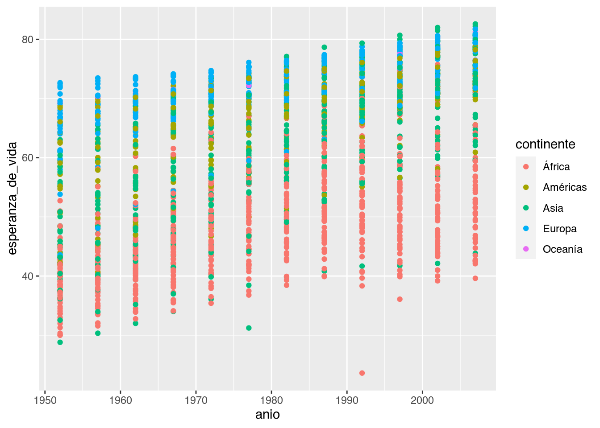

Visualizar datos es útil para identificar a relación entre distintas variables pero también para comunicar el análisis de los datos y resultados. El paquete ggplot2 permite generar gráficos de gran calidad en pocos pasos. Cualquier gráfico de ggplot tendrá como mínimo 3 componentes: los datos, un sistema de coordenadas y una geometría (la representación visual de los datos) y se irá construyendo por capas.
Primera capa: el área del gráfico
Cómo siempre será necesario cargar los paquetes que vamos a usar y ya que estamos los datos con los que venimos trabajando:
library(readr)
library(ggplot2)
paises <- read_csv("datos/paises.csv")
## Parsed with column specification:
## cols(
## pais = col_character(),
## continente = col_character(),
## anio = col_double(),
## esperanza_de_vida = col_double(),
## poblacion = col_double(),
## pib_per_capita = col_double()
## )
La función principal de ggplot2 es justamente ggplot() que nos permite iniciar el gráfico y además definir las características globales. El primer argumento de esta función serán los datos que queremos visualizar, siempre en un data.frame. En este caso usamos paises.
El segundo argumento se llama mapping justamente porque mapea o dibuja los ejes del gráfico y siempre va acompañado de la función aes(). La función aes() recibe las propiedades estésticas del gráfico (o aesthetic en inglés) a partir de las variables (o columnas) del data.frame estamos usando. En este caso le indicamos que en el eje x querremos graficar la variable pib_per_capita y en eje y la variable esperanza_de_vida.
Pero esta sola función no es suficiente, solo genera la primera capa: el área del gráfico.
ggplot(data = paises, mapping = aes(x = pib_per_capita, y = esperanza_de_vida))

Segunda capa: geometrías
Necesitamos agregar una nueva capa a nuestro gráfico, los elementos geométricos o geoms que representaran los datos. Para esto sumamos una función geom, por ejemplo si queremos representar los datos con puntos usaremos geom_point()
ggplot(data = paises, mapping = aes(x = pib_per_capita, y = esperanza_de_vida)) +
geom_point()

¡Nuestro primer gráfico!
**Primer desafío
Ahora es tu turno. Modifica el gráfico anterior para visualizar cómo cambia la esperanza de vida a lo largo de los años.
¿Te parece útil este gráfico?
Este gráfico tiene muchísima información porque tiene un punto por cada país para cada año para visualizar la esperanza de vida. Pero por ahora no podemos identificar esos paises, necesitamos agregar información al gráfico.
ggplot(data = paises, mapping = aes(x = anio, y = esperanza_de_vida)) +
geom_point()

Mapear variables a elementos
Una posible solución sería utilizar otras variables de nuestros datos, por ejemplo continente y mapear el color de los puntos de a cuerdo al continente que pertenecen.
ggplot(data = paises, mapping = aes(x = anio, y = esperanza_de_vida)) +
geom_point(aes(color = continente))

Ahh, ahora está un poco mejor. Por ejemplo ya podemos ver que muchos paises de Europa (los puntos celestes) tienen en promedio mayor esperanza de vida a lo largo de los años que muchos paises de África (los puntos rojos). Aún no podemos identificar los paises individualmente pero podemos sacar algo más de información de nuestros datos.
Algo muy importante a tener en cuenta: los puntos toman un color de acuerdo a una variable de los datos, y para que ggplot2 identifique esa variable (en este caso continente) es necesario incluirla dentro de una función aes().
Otras geometrías
Este gráfico posiblemente no sea muy adecuado si queremos visualizar la evolución de una variable a lo largo del tiempo, necesitamos cambiar la geometría a lineas usando geom_line()
ggplot(data = paises, mapping = aes(x = anio, y = esperanza_de_vida)) +
geom_line(aes(color = continente))
Por suerte las funciones geom_*() tienen más o menos nombres amigables. Pero el gráfico sigue teniendo problemas, al parecer dibujó una línea por continente (o algo así). Si estuvieramos dibujando este gráfico con lapiz y papel muy posiblemente hubieramos identificado los puntos que corresponden a cada país y los hubieramos “unido con líneas”, necesitamos que ggplot2 haga esto. ¿Cómo le indicamos que puntos corresponde a cada pais? Necesitamos que los agrupe por la variablel pais (¡qué bueno que tenemos toda esa información en nuestra base de datos!).
ggplot(data = paises, mapping = aes(x = anio, y = esperanza_de_vida)) +
geom_line(aes(color = continente, group = pais))

Usamos el argumento group = y de nuevo, lo incluimos dentro de la función aes() para indicarle a ggplot2 que busque la variable pais dentro del data.frame que estamos usando.
Y ahora si, conseguimos el gráfico que estamos buscando.
**Segundo desafío
Cuando mencionamos que ggplot2 construye gráficos por capas, lo decíamos en serio! Hasta ahora tenemos dos capas: el área del gráfico y una geometría (las líneas).
- Sumá una tercera capa para visualizar puntos además de las líneas.
- ¿Porqué los puntos ahora no siguen los colores de los continentes?
- ¿Qué cambio podrías hacer para que los puntos también tengan color según el continente?
Acá surge una característica importante de las capas: pueden tener apariencia independiente si solo mapeamos el color en la capa de las líneas y no en la capa de los puntos. Al mismo tiempo, si quisieramos que todas las capas tenga la misma apariencia podemos incluir el argumento color =en la función global ggpplot() o repetirlo en cada capa.
ggplot(paises, aes(anio, esperanza_de_vida)) +
geom_line(aes(color = continente, group = pais)) +
geom_point()

Si te preguntabas a donde fueron a parar el data =, el mapping = y los nombres de los argumentos adentro de la función aes(), x = e y =, resulta que estamos aprovechando que tanto ggplot2 como nosotros ahora sabemos en que orden recibe la información cada función. Siempre el primer elemento que le pasemos o indiquemos a la función ggplot() será el data.frame.
Algunos argumentos para cambiar la apariencia de las geometrías son:
color = o colour = modifica el color de líneas y puntosfill =modifica el color del área de un elemento, por ejemplo el relleno de un puntolinetype = modica el tipo de línea (punteada, continua, con guiones, etc.)pch = modifica el tamaño del puntosize = modifica el tamaño de los elementos (por ejemplo el tamaño de puntos o el grosor de líneas)alpha = modifica la transparencia de los elementos (1 = opaco, 0 = transparente)shape = modifica el tipo de punto (circulos, cuadrados, tríangulos, etc.)
Modificar elementos utilizando un valor único
Es posible que en algún momento necesites cambiar la apariencia de los elementos o geometrías independientemente de las variables de tu data.frame. Por ejemplo podrías querere que todos los puntos sean de un único color: rojos. En este caso `geom_point(aes(color = “red”)) -ojo que los colores van en inglés- no va a funcionar, de hecho ggplot2 intentará encontrar una variable “red” dentro del data.frame sin exito.
Ahora que no nos interesa mapear el color a una variable, podemos mover ese argumento afuera de la función aes(): geom_point(color = "red").
Relación entre variables
Muchas veces no es suficiente con mirar un gráfico para identificar la relación entre las variables y entonces calculamos una tendencia o ajustamos los datos a una función (por ejemplo a una recta). Por supuesto ggplot2 tiene una geometría para sumar esta capa a los gráficos.
También es posible que necesitemos manipular los datos antes de poder hacer un gráfico. A veces esa mannipulación será compleja y entonces para no repetir el cálculo muchas veces, guardaremos los datos modificados en una nueva variable. Pero también podemos encadenar la manipulación de los datos y el gráfico resultante.
Por ejemplo, calculemos la esperanza de vida media por continente y para cada año usando dplyr y luego grafiquemos la esperanza_de_vida_media a los largo de los anios:
library(dplyr)
paises %>%
group_by(continente, anio) %>%
summarise(esperanza_de_vida_media = mean(esperanza_de_vida)) %>%
ggplot(aes(anio, esperanza_de_vida_media)) + # Acá se acaban los %>% y comienzan los "+"
geom_point()
## `summarise()` regrouping output by 'continente' (override with `.groups` argument)

Esto es posible gracias al operador %>% que le pasa el resutado de summarise() a la función ggplot(). Y este resultado no es ni más ni menos que el data.frame que necesitamos para hacer nuestro gráfico. Es importante notar que una vez que comenzamos el gráfico ya no se puede usar el operador %>% y las capas del gráfico se suman como siempre con +.
Este gráfico entonces parece mostrar que la esperanza de vida fue aumentado a lo largo de los años pero sería interesante ver esa relación más explicitamente agregando una nueva capa con geom_smooth().
paises %>%
group_by(continente, anio) %>%
summarise(esperanza_de_vida_media = mean(esperanza_de_vida)) %>%
ggplot(aes(anio, esperanza_de_vida_media)) +
geom_point() +
geom_smooth()
## `summarise()` regrouping output by 'continente' (override with `.groups` argument)
## `geom_smooth()` using method = 'loess' and formula 'y ~ x'

Por defecto esta geometría una el método loess para identificar la relación entre variables, pero hay otros (podés revisar la documentación de la función para leer más detalles). En gris nos muestra el intervalo de confianza al rededor de este suavizado que en este caso es bastante grande porque tenemos pocos datos!
Cómo cualquier geom, podemos modificar el color, el grosor de la línea y casi cualquier cosa que se te ocurra.
Tercer desafío
Modificá el siguiente código para obtener el gráfico que se muestra más abajo.
paises %>%
group_by(continente, _____) %>%
summarise(esperanza_de_vida_media = mean(esperanza_de_vida)) %>%
ggplot(aes(anio, ________________)) +
geom_point(aes(color = continente), size = 3) +
geom_smooth(color = continente)
## `summarise()` regrouping output by 'continente' (override with `.groups` argument)
## `geom_smooth()` using method = 'loess' and formula 'y ~ x'
LS0tCnRpdGxlOiAiVmlzdWFsaXphY2nDs24gZGUgZGF0b3MgY29uIHtnZ3Bsb3QyfSBJIgpvdXRwdXQ6IAogIGh0bWxfZG9jdW1lbnQ6CiAgICBjb2RlX2Rvd25sb2FkOiB0cnVlCiAgICB0b2M6IHRydWUKICAgIHRvY19mbG9hdDogdHJ1ZQotLS0KCmBgYHtyIHNldHVwLCBpbmNsdWRlPUZBTFNFfQprbml0cjo6b3B0c19jaHVuayRzZXQoZWNobyA9IFRSVUUpCmBgYAoKVmlzdWFsaXphciBkYXRvcyBlcyDDunRpbCBwYXJhIGlkZW50aWZpY2FyIGEgcmVsYWNpw7NuIGVudHJlIGRpc3RpbnRhcyB2YXJpYWJsZXMgcGVybyB0YW1iacOpbiBwYXJhIGNvbXVuaWNhciBlbCBhbsOhbGlzaXMgZGUgbG9zIGRhdG9zIHkgcmVzdWx0YWRvcy4gRWwgcGFxdWV0ZSBgZ2dwbG90MmAgcGVybWl0ZSBnZW5lcmFyIGdyw6FmaWNvcyBkZSBncmFuIGNhbGlkYWQgZW4gcG9jb3MgcGFzb3MuIEN1YWxxdWllciBncsOhZmljbyBkZSBnZ3Bsb3QgdGVuZHLDoSBjb21vIG3DrW5pbW8gMyBjb21wb25lbnRlczogbG9zICoqZGF0b3MqKiwgdW4gKipzaXN0ZW1hIGRlIGNvb3JkZW5hZGFzKiogeSB1bmEgKipnZW9tZXRyw61hKiogKGxhIHJlcHJlc2VudGFjacOzbiB2aXN1YWwgZGUgbG9zIGRhdG9zKSB5IHNlIGlyw6EgY29uc3RydXllbmRvIHBvciBjYXBhcy4gCgojIyMgUHJpbWVyYSBjYXBhOiBlbCDDoXJlYSBkZWwgZ3LDoWZpY28KCkPDs21vIHNpZW1wcmUgc2Vyw6EgbmVjZXNhcmlvIGNhcmdhciBsb3MgcGFxdWV0ZXMgcXVlIHZhbW9zIGEgdXNhciB5IHlhIHF1ZSBlc3RhbW9zIGxvcyBkYXRvcyBjb24gbG9zIHF1ZSB2ZW5pbW9zIHRyYWJhamFuZG86CgpgYGB7cn0KbGlicmFyeShyZWFkcikKbGlicmFyeShnZ3Bsb3QyKQpwYWlzZXMgPC0gcmVhZF9jc3YoImRhdG9zL3BhaXNlcy5jc3YiKQpgYGAKCkxhIGZ1bmNpw7NuIHByaW5jaXBhbCBkZSBnZ3Bsb3QyIGVzIGp1c3RhbWVudGUgYGdncGxvdCgpYCBxdWUgbm9zIHBlcm1pdGUgKmluaWNpYXIqIGVsIGdyw6FmaWNvIHkgYWRlbcOhcyBkZWZpbmlyIGxhcyBjYXJhY3RlcsOtc3RpY2FzICpnbG9iYWxlcyouIEVsIHByaW1lciBhcmd1bWVudG8gZGUgZXN0YSBmdW5jacOzbiBzZXLDoW4gbG9zIGRhdG9zIHF1ZSBxdWVyZW1vcyB2aXN1YWxpemFyLCBzaWVtcHJlIGVuIHVuIGRhdGEuZnJhbWUuIEVuIGVzdGUgY2FzbyB1c2Ftb3MgYHBhaXNlc2AuIAoKRWwgc2VndW5kbyBhcmd1bWVudG8gc2UgbGxhbWEgbWFwcGluZyBqdXN0YW1lbnRlIHBvcnF1ZSAqbWFwZWEqIG8gKmRpYnVqYSogbG9zIGVqZXMgZGVsIGdyw6FmaWNvIHkgKipzaWVtcHJlKiogdmEgYWNvbXBhw7FhZG8gZGUgbGEgZnVuY2nDs24gYGFlcygpYC4gTGEgZnVuY2nDs24gYGFlcygpYCByZWNpYmUgbGFzIHByb3BpZWRhZGVzIGVzdMOpc3RpY2FzIGRlbCBncsOhZmljbyAobyAqYWVzdGhldGljKiBlbiBpbmdsw6lzKSBhIHBhcnRpciBkZSBsYXMgdmFyaWFibGVzIChvIGNvbHVtbmFzKSBkZWwgZGF0YS5mcmFtZSBlc3RhbW9zIHVzYW5kby4gRW4gZXN0ZSBjYXNvIGxlIGluZGljYW1vcyBxdWUgZW4gZWwgZWplICoqeCoqIHF1ZXJyZW1vcyBncmFmaWNhciBsYSB2YXJpYWJsZSBgcGliX3Blcl9jYXBpdGFgIHkgZW4gZWplICoqeSoqIGxhIHZhcmlhYmxlIGBlc3BlcmFuemFfZGVfdmlkYWAuCgpQZXJvIGVzdGEgc29sYSBmdW5jacOzbiBubyBlcyBzdWZpY2llbnRlLCBzb2xvIGdlbmVyYSBsYSBwcmltZXJhIGNhcGE6IGVsIMOhcmVhIGRlbCBncsOhZmljby4KCmBgYHtyfQpnZ3Bsb3QoZGF0YSA9IHBhaXNlcywgbWFwcGluZyA9IGFlcyh4ID0gcGliX3Blcl9jYXBpdGEsIHkgPSBlc3BlcmFuemFfZGVfdmlkYSkpCmBgYAoKIyMjIFNlZ3VuZGEgY2FwYTogZ2VvbWV0csOtYXMKTmVjZXNpdGFtb3MgYWdyZWdhciB1bmEgbnVldmEgY2FwYSBhIG51ZXN0cm8gZ3LDoWZpY28sIGxvcyBlbGVtZW50b3MgZ2VvbcOpdHJpY29zIG8gKmdlb21zKiBxdWUgcmVwcmVzZW50YXJhbiBsb3MgZGF0b3MuIFBhcmEgZXN0byAqc3VtYW1vcyogdW5hIGZ1bmNpw7NuIGdlb20sIHBvciBlamVtcGxvIHNpIHF1ZXJlbW9zIHJlcHJlc2VudGFyIGxvcyBkYXRvcyBjb24gcHVudG9zIHVzYXJlbW9zIGBnZW9tX3BvaW50KClgCgpgYGB7cn0KZ2dwbG90KGRhdGEgPSBwYWlzZXMsIG1hcHBpbmcgPSBhZXMoeCA9IHBpYl9wZXJfY2FwaXRhLCB5ID0gZXNwZXJhbnphX2RlX3ZpZGEpKSArCiAgZ2VvbV9wb2ludCgpCmBgYAoKwqFOdWVzdHJvIHByaW1lciBncsOhZmljbyEgCgo6Ojogey5hbGVydCAuYWxlcnQtaW5mb30KKipQcmltZXIgZGVzYWbDrW8KCkFob3JhIGVzIHR1IHR1cm5vLiBNb2RpZmljYSBlbCBncsOhZmljbyBhbnRlcmlvciBwYXJhIHZpc3VhbGl6YXIgY8OzbW8gY2FtYmlhIGxhIGVzcGVyYW56YSBkZSB2aWRhIGEgbG8gbGFyZ28gZGUgbG9zIGHDsW9zLiAKCsK/VGUgcGFyZWNlIMO6dGlsIGVzdGUgZ3LDoWZpY28/Cjo6OgoKRXN0ZSBncsOhZmljbyB0aWVuZSBtdWNow61zaW1hIGluZm9ybWFjacOzbiBwb3JxdWUgdGllbmUgdW4gcHVudG8gcG9yIGNhZGEgcGHDrXMgcGFyYSBjYWRhIGHDsW8gcGFyYSB2aXN1YWxpemFyIGxhIGVzcGVyYW56YSBkZSB2aWRhLiBQZXJvIHBvciBhaG9yYSBubyBwb2RlbW9zIGlkZW50aWZpY2FyIGVzb3MgcGFpc2VzLCBuZWNlc2l0YW1vcyBhZ3JlZ2FyIGluZm9ybWFjacOzbiBhbCBncsOhZmljby4KCmBgYHtyfQpnZ3Bsb3QoZGF0YSA9IHBhaXNlcywgbWFwcGluZyA9IGFlcyh4ID0gYW5pbywgeSA9IGVzcGVyYW56YV9kZV92aWRhKSkgKwogIGdlb21fcG9pbnQoKQpgYGAKCiMjIyBNYXBlYXIgdmFyaWFibGVzIGEgZWxlbWVudG9zCgpVbmEgcG9zaWJsZSBzb2x1Y2nDs24gc2Vyw61hIHV0aWxpemFyIG90cmFzIHZhcmlhYmxlcyBkZSBudWVzdHJvcyBkYXRvcywgcG9yIGVqZW1wbG8gYGNvbnRpbmVudGVgIHkgKm1hcGVhciogZWwgY29sb3IgZGUgbG9zIHB1bnRvcyBkZSBhIGN1ZXJkbyBhbCBjb250aW5lbnRlIHF1ZSBwZXJ0ZW5lY2VuLgoKYGBge3J9CmdncGxvdChkYXRhID0gcGFpc2VzLCBtYXBwaW5nID0gYWVzKHggPSBhbmlvLCB5ID0gZXNwZXJhbnphX2RlX3ZpZGEpKSArCiAgZ2VvbV9wb2ludChhZXMoY29sb3IgPSBjb250aW5lbnRlKSkKYGBgCgpBaGgsIGFob3JhIGVzdMOhIHVuIHBvY28gbWVqb3IuIFBvciBlamVtcGxvIHlhIHBvZGVtb3MgdmVyIHF1ZSBtdWNob3MgcGFpc2VzIGRlIEV1cm9wYSAobG9zIHB1bnRvcyBjZWxlc3RlcykgdGllbmVuIGVuIHByb21lZGlvIG1heW9yIGVzcGVyYW56YSBkZSB2aWRhIGEgbG8gbGFyZ28gZGUgbG9zIGHDsW9zIHF1ZSBtdWNob3MgcGFpc2VzIGRlIMOBZnJpY2EgKGxvcyBwdW50b3Mgcm9qb3MpLiBBw7puIG5vIHBvZGVtb3MgaWRlbnRpZmljYXIgbG9zIHBhaXNlcyBpbmRpdmlkdWFsbWVudGUgcGVybyBwb2RlbW9zIHNhY2FyIGFsZ28gbcOhcyBkZSBpbmZvcm1hY2nDs24gZGUgbnVlc3Ryb3MgZGF0b3MuIAoKQWxnbyBtdXkgaW1wb3J0YW50ZSBhIHRlbmVyIGVuIGN1ZW50YTogKipsb3MgcHVudG9zIHRvbWFuIHVuIGNvbG9yIGRlIGFjdWVyZG8gYSB1bmEgdmFyaWFibGUgZGUgbG9zIGRhdG9zKiosIHkgcGFyYSBxdWUgZ2dwbG90MiBpZGVudGlmaXF1ZSBlc2EgdmFyaWFibGUgKGVuIGVzdGUgY2FzbyBgY29udGluZW50ZWApIGVzIG5lY2VzYXJpbyBpbmNsdWlybGEgZGVudHJvIGRlIHVuYSBmdW5jacOzbiBgYWVzKClgLgoKIyMjIE90cmFzIGdlb21ldHLDrWFzCgpFc3RlIGdyw6FmaWNvIHBvc2libGVtZW50ZSBubyBzZWEgbXV5IGFkZWN1YWRvIHNpIHF1ZXJlbW9zIHZpc3VhbGl6YXIgbGEgKmV2b2x1Y2nDs24qIGRlIHVuYSB2YXJpYWJsZSBhIGxvIGxhcmdvIGRlbCB0aWVtcG8sIG5lY2VzaXRhbW9zIGNhbWJpYXIgbGEgZ2VvbWV0csOtYSBhIGxpbmVhcyB1c2FuZG8gYGdlb21fbGluZSgpYAoKYGBge3J9CmdncGxvdChkYXRhID0gcGFpc2VzLCBtYXBwaW5nID0gYWVzKHggPSBhbmlvLCB5ID0gZXNwZXJhbnphX2RlX3ZpZGEpKSArCiAgZ2VvbV9saW5lKGFlcyhjb2xvciA9IGNvbnRpbmVudGUpKQpgYGAKClBvciBzdWVydGUgbGFzIGZ1bmNpb25lcyBgZ2VvbV8qKClgIHRpZW5lbiBtw6FzIG8gbWVub3Mgbm9tYnJlcyBhbWlnYWJsZXMuIFBlcm8gZWwgZ3LDoWZpY28gc2lndWUgdGVuaWVuZG8gcHJvYmxlbWFzLCBhbCBwYXJlY2VyIGRpYnVqw7MgdW5hIGzDrW5lYSBwb3IgY29udGluZW50ZSAobyBhbGdvIGFzw60pLiBTaSBlc3R1dmllcmFtb3MgZGlidWphbmRvIGVzdGUgZ3LDoWZpY28gY29uIGxhcGl6IHkgcGFwZWwgbXV5IHBvc2libGVtZW50ZSBodWJpZXJhbW9zIGlkZW50aWZpY2FkbyBsb3MgcHVudG9zIHF1ZSBjb3JyZXNwb25kZW4gYSBjYWRhIHBhw61zIHkgbG9zIGh1YmllcmFtb3MgInVuaWRvIGNvbiBsw61uZWFzIiwgbmVjZXNpdGFtb3MgcXVlIGdncGxvdDIgaGFnYSBlc3RvLiDCv0PDs21vIGxlIGluZGljYW1vcyBxdWUgcHVudG9zIGNvcnJlc3BvbmRlIGEgY2FkYSBwYWlzPyBOZWNlc2l0YW1vcyBxdWUgbG9zICphZ3J1cGUqIHBvciBsYSB2YXJpYWJsZWwgYHBhaXNgICjCoXF1w6kgYnVlbm8gcXVlIHRlbmVtb3MgdG9kYSBlc2EgaW5mb3JtYWNpw7NuIGVuIG51ZXN0cmEgYmFzZSBkZSBkYXRvcyEpLgoKYGBge3J9CmdncGxvdChkYXRhID0gcGFpc2VzLCBtYXBwaW5nID0gYWVzKHggPSBhbmlvLCB5ID0gZXNwZXJhbnphX2RlX3ZpZGEpKSArCiAgZ2VvbV9saW5lKGFlcyhjb2xvciA9IGNvbnRpbmVudGUsIGdyb3VwID0gcGFpcykpCmBgYAoKVXNhbW9zIGVsIGFyZ3VtZW50byBgZ3JvdXAgPWAgeSBkZSBudWV2bywgbG8gaW5jbHVpbW9zIGRlbnRybyBkZSBsYSBmdW5jacOzbiBgYWVzKClgIHBhcmEgaW5kaWNhcmxlIGEgZ2dwbG90MiBxdWUgYnVzcXVlIGxhIHZhcmlhYmxlIGBwYWlzYCBkZW50cm8gZGVsIGRhdGEuZnJhbWUgcXVlIGVzdGFtb3MgdXNhbmRvLiAKClkgYWhvcmEgc2ksIGNvbnNlZ3VpbW9zIGVsIGdyw6FmaWNvIHF1ZSBlc3RhbW9zIGJ1c2NhbmRvLiAKCjo6OiB7LmFsZXJ0IC5hbGVydC1pbmZvfQoqKlNlZ3VuZG8gZGVzYWbDrW8KCkN1YW5kbyBtZW5jaW9uYW1vcyBxdWUgZ2dwbG90MiBjb25zdHJ1eWUgZ3LDoWZpY29zIHBvciBjYXBhcywgbG8gZGVjw61hbW9zIGVuIHNlcmlvISBIYXN0YSBhaG9yYSB0ZW5lbW9zIGRvcyBjYXBhczogZWwgw6FyZWEgZGVsIGdyw6FmaWNvIHkgdW5hIGdlb21ldHLDrWEgKGxhcyBsw61uZWFzKS4gCgoxLiBTdW3DoSB1bmEgdGVyY2VyYSBjYXBhIHBhcmEgdmlzdWFsaXphciBwdW50b3MgYWRlbcOhcyBkZSBsYXMgbMOtbmVhcy4KMi4gwr9Qb3JxdcOpIGxvcyBwdW50b3MgYWhvcmEgbm8gc2lndWVuIGxvcyBjb2xvcmVzIGRlIGxvcyBjb250aW5lbnRlcz8KMy4gwr9RdcOpIGNhbWJpbyBwb2Ryw61hcyBoYWNlciBwYXJhIHF1ZSBsb3MgcHVudG9zIHRhbWJpw6luIHRlbmdhbiBjb2xvciBzZWfDum4gZWwgY29udGluZW50ZT8KOjo6CgpBY8OhIHN1cmdlIHVuYSBjYXJhY3RlcsOtc3RpY2EgaW1wb3J0YW50ZSBkZSBsYXMgY2FwYXM6IHB1ZWRlbiB0ZW5lciBhcGFyaWVuY2lhIGluZGVwZW5kaWVudGUgc2kgc29sbyAqbWFwZWFtb3MqIGVsIGNvbG9yIGVuIGxhIGNhcGEgZGUgbGFzIGzDrW5lYXMgeSBubyBlbiBsYSBjYXBhIGRlIGxvcyBwdW50b3MuIEFsIG1pc21vIHRpZW1wbywgc2kgcXVpc2llcmFtb3MgcXVlIHRvZGFzIGxhcyBjYXBhcyB0ZW5nYSBsYSBtaXNtYSBhcGFyaWVuY2lhIHBvZGVtb3MgaW5jbHVpciBlbCBhcmd1bWVudG8gYGNvbG9yID0gYGVuIGxhIGZ1bmNpw7NuIGdsb2JhbCBgZ2dwcGxvdCgpYCBvIHJlcGV0aXJsbyBlbiBjYWRhIGNhcGEuCgpgYGB7cn0KZ2dwbG90KHBhaXNlcywgYWVzKGFuaW8sIGVzcGVyYW56YV9kZV92aWRhKSkgKwogIGdlb21fbGluZShhZXMoY29sb3IgPSBjb250aW5lbnRlLCBncm91cCA9IHBhaXMpKSArCiAgZ2VvbV9wb2ludCgpCmBgYAoKOjo6IHsuYWxlcnQgLmFsZXJ0LXN1Y2Nlc3N9CgpTaSB0ZSBwcmVndW50YWJhcyBhIGRvbmRlIGZ1ZXJvbiBhIHBhcmFyIGVsIGBkYXRhID0gYCwgZWwgYG1hcHBpbmcgPSBgIHkgbG9zIG5vbWJyZXMgZGUgbG9zIGFyZ3VtZW50b3MgYWRlbnRybyBkZSBsYSBmdW5jacOzbiBgYWVzKClgLCBgeCA9IGAgZSBgeSA9IGAsIHJlc3VsdGEgcXVlIGVzdGFtb3MgYXByb3ZlY2hhbmRvIHF1ZSB0YW50byBnZ3Bsb3QyIGNvbW8gbm9zb3Ryb3MgYWhvcmEgc2FiZW1vcyBlbiBxdWUgb3JkZW4gcmVjaWJlIGxhIGluZm9ybWFjacOzbiBjYWRhIGZ1bmNpw7NuLiBTaWVtcHJlIGVsIHByaW1lciBlbGVtZW50byBxdWUgbGUgKnBhc2Vtb3MqIG8gaW5kaXF1ZW1vcyBhIGxhIGZ1bmNpw7NuIGBnZ3Bsb3QoKWAgc2Vyw6EgZWwgZGF0YS5mcmFtZS4KOjo6CgpBbGd1bm9zIGFyZ3VtZW50b3MgcGFyYSBjYW1iaWFyIGxhIGFwYXJpZW5jaWEgZGUgbGFzIGdlb21ldHLDrWFzIHNvbjoKCiogYGNvbG9yID0gYCBvIGBjb2xvdXIgPSBgIG1vZGlmaWNhIGVsIGNvbG9yIGRlIGzDrW5lYXMgeSBwdW50b3MKKiBgZmlsbCA9IGBtb2RpZmljYSBlbCBjb2xvciBkZWwgw6FyZWEgZGUgdW4gZWxlbWVudG8sIHBvciBlamVtcGxvIGVsIHJlbGxlbm8gZGUgdW4gcHVudG8KKiBgbGluZXR5cGUgPSBgIG1vZGljYSBlbCB0aXBvIGRlIGzDrW5lYSAocHVudGVhZGEsIGNvbnRpbnVhLCBjb24gZ3Vpb25lcywgZXRjLikKKiBgcGNoID0gYCBtb2RpZmljYSBlbCB0YW1hw7FvIGRlbCBwdW50bwoqIGBzaXplID0gYCBtb2RpZmljYSBlbCB0YW1hw7FvIGRlIGxvcyBlbGVtZW50b3MgKHBvciBlamVtcGxvIGVsIHRhbWHDsW8gZGUgcHVudG9zIG8gZWwgZ3Jvc29yIGRlIGzDrW5lYXMpCiogYGFscGhhID0gYCBtb2RpZmljYSBsYSB0cmFuc3BhcmVuY2lhIGRlIGxvcyBlbGVtZW50b3MgKDEgPSBvcGFjbywgMCA9IHRyYW5zcGFyZW50ZSkKKiBgc2hhcGUgPSBgIG1vZGlmaWNhIGVsIHRpcG8gZGUgcHVudG8gKGNpcmN1bG9zLCBjdWFkcmFkb3MsIHRyw61hbmd1bG9zLCBldGMuKQoKOjo6IHsuYWxlcnQgLmFsZXJ0LXN1Y2Nlc3N9CioqTW9kaWZpY2FyIGVsZW1lbnRvcyB1dGlsaXphbmRvIHVuIHZhbG9yIMO6bmljbyoqCgpFcyBwb3NpYmxlIHF1ZSBlbiBhbGfDum4gbW9tZW50byBuZWNlc2l0ZXMgY2FtYmlhciBsYSBhcGFyaWVuY2lhIGRlIGxvcyBlbGVtZW50b3MgbyBnZW9tZXRyw61hcyBpbmRlcGVuZGllbnRlbWVudGUgZGUgbGFzIHZhcmlhYmxlcyBkZSB0dSBkYXRhLmZyYW1lLiBQb3IgZWplbXBsbyBwb2Ryw61hcyBxdWVyZXJlIHF1ZSB0b2RvcyBsb3MgcHVudG9zIHNlYW4gZGUgdW4gw7puaWNvIGNvbG9yOiByb2pvcy4gRW4gZXN0ZSBjYXNvIGBnZW9tX3BvaW50KGFlcyhjb2xvciA9ICJyZWQiKSkgLW9qbyBxdWUgbG9zIGNvbG9yZXMgdmFuIGVuIGluZ2zDqXMtIG5vIHZhIGEgZnVuY2lvbmFyLCBkZSBoZWNobyBnZ3Bsb3QyIGludGVudGFyw6EgZW5jb250cmFyIHVuYSB2YXJpYWJsZSAicmVkIiBkZW50cm8gZGVsIGRhdGEuZnJhbWUgc2luIGV4aXRvLgoKQWhvcmEgcXVlIG5vIG5vcyBpbnRlcmVzYSAqbWFwZWFyKiBlbCBjb2xvciBhIHVuYSB2YXJpYWJsZSwgcG9kZW1vcyBtb3ZlciBlc2UgYXJndW1lbnRvICoqYWZ1ZXJhKiogZGUgbGEgZnVuY2nDs24gYGFlcygpYDogYGdlb21fcG9pbnQoY29sb3IgPSAicmVkIilgLgo6OjogCgojIyMgUmVsYWNpw7NuIGVudHJlIHZhcmlhYmxlcwoKTXVjaGFzIHZlY2VzIG5vIGVzIHN1ZmljaWVudGUgY29uIG1pcmFyIHVuIGdyw6FmaWNvIHBhcmEgaWRlbnRpZmljYXIgbGEgcmVsYWNpw7NuIGVudHJlIGxhcyB2YXJpYWJsZXMgeSBlbnRvbmNlcyBjYWxjdWxhbW9zIHVuYSB0ZW5kZW5jaWEgbyBhanVzdGFtb3MgbG9zIGRhdG9zIGEgdW5hIGZ1bmNpw7NuIChwb3IgZWplbXBsbyBhIHVuYSByZWN0YSkuIFBvciBzdXB1ZXN0byBnZ3Bsb3QyIHRpZW5lIHVuYSBnZW9tZXRyw61hIHBhcmEgc3VtYXIgZXN0YSBjYXBhIGEgbG9zIGdyw6FmaWNvcy4KClRhbWJpw6luIGVzIHBvc2libGUgcXVlIG5lY2VzaXRlbW9zIG1hbmlwdWxhciBsb3MgZGF0b3MgYW50ZXMgZGUgcG9kZXIgaGFjZXIgdW4gZ3LDoWZpY28uIEEgdmVjZXMgZXNhIG1hbm5pcHVsYWNpw7NuIHNlcsOhIGNvbXBsZWphIHkgZW50b25jZXMgcGFyYSBubyByZXBldGlyIGVsIGPDoWxjdWxvIG11Y2hhcyB2ZWNlcywgZ3VhcmRhcmVtb3MgbG9zIGRhdG9zIG1vZGlmaWNhZG9zIGVuIHVuYSBudWV2YSB2YXJpYWJsZS4gUGVybyB0YW1iacOpbiBwb2RlbW9zICplbmNhZGVuYXIqIGxhIG1hbmlwdWxhY2nDs24gZGUgbG9zIGRhdG9zIHkgZWwgZ3LDoWZpY28gcmVzdWx0YW50ZS4KClBvciBlamVtcGxvLCBjYWxjdWxlbW9zIGxhIGVzcGVyYW56YSBkZSB2aWRhIG1lZGlhIHBvciBjb250aW5lbnRlIHkgcGFyYSBjYWRhIGHDsW8gdXNhbmRvIFtgZHBseXJgXSgwNS1kcGx5ci1JLmh0bWwpIHkgbHVlZ28gZ3JhZmlxdWVtb3MgbGEgYGVzcGVyYW56YV9kZV92aWRhX21lZGlhYCBhIGxvcyBsYXJnbyBkZSBsb3MgYGFuaW9zYDoKCmBgYHtyfQpsaWJyYXJ5KGRwbHlyKQoKcGFpc2VzICU+JSAKICBncm91cF9ieShjb250aW5lbnRlLCBhbmlvKSAlPiUgCiAgc3VtbWFyaXNlKGVzcGVyYW56YV9kZV92aWRhX21lZGlhID0gbWVhbihlc3BlcmFuemFfZGVfdmlkYSkpICU+JSAKICBnZ3Bsb3QoYWVzKGFuaW8sIGVzcGVyYW56YV9kZV92aWRhX21lZGlhKSkgKyAgIyBBY8OhIHNlIGFjYWJhbiBsb3MgJT4lIHkgY29taWVuemFuIGxvcyAiKyIKICBnZW9tX3BvaW50KCkKYGBgCgpFc3RvIGVzIHBvc2libGUgZ3JhY2lhcyBhbCBvcGVyYWRvciBgJT4lYCBxdWUgbGUgKnBhc2EqIGVsIHJlc3V0YWRvIGRlIGBzdW1tYXJpc2UoKWAgYSBsYSBmdW5jacOzbiBgZ2dwbG90KClgLiBZIGVzdGUgcmVzdWx0YWRvIG5vIGVzIG5pIG3DoXMgbmkgbWVub3MgcXVlIGVsIGRhdGEuZnJhbWUgcXVlIG5lY2VzaXRhbW9zIHBhcmEgaGFjZXIgbnVlc3RybyBncsOhZmljby4gRXMgaW1wb3J0YW50ZSBub3RhciBxdWUgdW5hIHZleiBxdWUgY29tZW56YW1vcyBlbCBncsOhZmljbyB5YSAqKm5vKiogc2UgcHVlZGUgdXNhciBlbCBvcGVyYWRvciBgJT4lYCB5IGxhcyBjYXBhcyBkZWwgZ3LDoWZpY28gc2UgKnN1bWFuKiBjb21vIHNpZW1wcmUgY29uIGArYC4KCkVzdGUgZ3LDoWZpY28gZW50b25jZXMgcGFyZWNlIG1vc3RyYXIgcXVlIGxhIGVzcGVyYW56YSBkZSB2aWRhIGZ1ZSBhdW1lbnRhZG8gYSBsbyBsYXJnbyBkZSBsb3MgYcOxb3MgcGVybyBzZXLDrWEgaW50ZXJlc2FudGUgdmVyIGVzYSByZWxhY2nDs24gbcOhcyBleHBsaWNpdGFtZW50ZSBhZ3JlZ2FuZG8gdW5hIG51ZXZhIGNhcGEgY29uIGBnZW9tX3Ntb290aCgpYC4KCmBgYHtyfQpwYWlzZXMgJT4lIAogIGdyb3VwX2J5KGNvbnRpbmVudGUsIGFuaW8pICU+JSAKICBzdW1tYXJpc2UoZXNwZXJhbnphX2RlX3ZpZGFfbWVkaWEgPSBtZWFuKGVzcGVyYW56YV9kZV92aWRhKSkgJT4lIAogIGdncGxvdChhZXMoYW5pbywgZXNwZXJhbnphX2RlX3ZpZGFfbWVkaWEpKSArICAKICBnZW9tX3BvaW50KCkgKwogIGdlb21fc21vb3RoKCkKYGBgCgpQb3IgZGVmZWN0byBlc3RhIGdlb21ldHLDrWEgdW5hIGVsIG3DqXRvZG8gKmxvZXNzKiBwYXJhIGlkZW50aWZpY2FyIGxhIHJlbGFjacOzbiBlbnRyZSB2YXJpYWJsZXMsIHBlcm8gaGF5IG90cm9zIChwb2TDqXMgcmV2aXNhciBsYSBkb2N1bWVudGFjacOzbiBkZSBsYSBmdW5jacOzbiBwYXJhIGxlZXIgbcOhcyBkZXRhbGxlcykuIEVuIGdyaXMgbm9zIG11ZXN0cmEgZWwgaW50ZXJ2YWxvIGRlIGNvbmZpYW56YSBhbCByZWRlZG9yIGRlIGVzdGUgc3Vhdml6YWRvIHF1ZSBlbiBlc3RlIGNhc28gZXMgYmFzdGFudGUgZ3JhbmRlIHBvcnF1ZSB0ZW5lbW9zIHBvY29zIGRhdG9zISAKCkPDs21vIGN1YWxxdWllciBnZW9tLCBwb2RlbW9zIG1vZGlmaWNhciBlbCBjb2xvciwgZWwgZ3Jvc29yIGRlIGxhIGzDrW5lYSB5IGNhc2kgY3VhbHF1aWVyIGNvc2EgcXVlIHNlIHRlIG9jdXJyYS4KCjo6OiB7LmFsZXJ0IC5hbGVydC1pbmZvfQoqKlRlcmNlciBkZXNhZsOtbyoqCgpNb2RpZmljw6EgZWwgc2lndWllbnRlIGPDs2RpZ28gcGFyYSBvYnRlbmVyIGVsIGdyw6FmaWNvIHF1ZSBzZSBtdWVzdHJhIG3DoXMgYWJham8uCgpgYGB7ciBldmFsPUZBTFNFfQpwYWlzZXMgJT4lIAogIGdyb3VwX2J5KGNvbnRpbmVudGUsIF9fX19fKSAlPiUgCiAgc3VtbWFyaXNlKGVzcGVyYW56YV9kZV92aWRhX21lZGlhID0gbWVhbihlc3BlcmFuemFfZGVfdmlkYSkpICU+JSAKICBnZ3Bsb3QoYWVzKGFuaW8sIF9fX19fX19fX19fX19fX18pKSArICAKICBnZW9tX3BvaW50KGFlcyhjb2xvciA9IGNvbnRpbmVudGUpLCBzaXplID0gMykgKwogIGdlb21fc21vb3RoKGNvbG9yID0gY29udGluZW50ZSkgCmBgYAoKYGBge3IgZWNobz1GQUxTRX0KcGFpc2VzICU+JSAKICBncm91cF9ieShjb250aW5lbnRlLCBhbmlvKSAlPiUgCiAgc3VtbWFyaXNlKGVzcGVyYW56YV9kZV92aWRhX21lZGlhID0gbWVhbihlc3BlcmFuemFfZGVfdmlkYSkpICU+JSAKICBnZ3Bsb3QoYWVzKGFuaW8sIGVzcGVyYW56YV9kZV92aWRhX21lZGlhKSkgKyAgCiAgZ2VvbV9zbW9vdGgoYWVzKGNvbG9yID0gY29udGluZW50ZSkpICsKICBnZW9tX3BvaW50KGFlcyhjb2xvciA9IGNvbnRpbmVudGUpLCBzaGFwZSA9IDgsIHNpemUgPSAzKSAKYGBgCjo6OiAKCgo=